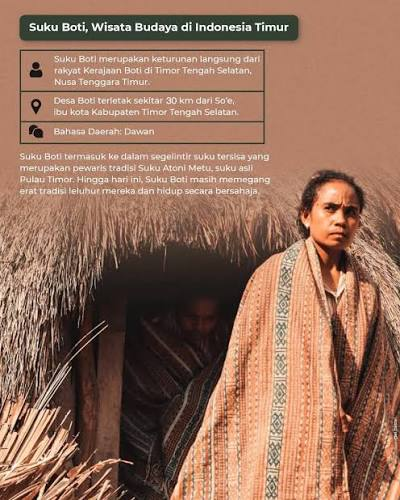

Selamat Datang di Jelajah Budaya NTT
Situs edukasi interaktif untuk mengenal kebudayaan lokal Nusa Tenggara Timur.
Profil Suku Boti
Selamat datang di halaman Profil Suku Boti — salah satu suku paling otentik di Pulau Timor, Nusa Tenggara Timur.
Suku Boti tinggal di Desa Boti, Kecamatan Kie, Kabupaten Timor Tengah Selatan. Desa ini dijuluki "Desa Adat Terakhir di Timor" karena masih memegang teguh tradisi leluhur sejak ratusan tahun silam.
🏛️ Sistem Pemerintahan
Boti dipimpin oleh dua tokoh utama:
- Usif — raja adat yang mengatur pemerintahan dan kehidupan sosial
- Am Tuan — pemimpin spiritual yang menjaga hubungan dengan leluhur
🌾 Kehidupan Sehari-hari
Masyarakat Boti hidup dari bertani, beternak, dan menenun. Mereka menolak listrik, pupuk kimia, dan modernisasi yang bertentangan dengan halaika (aturan adat).
🎨 Kain Tenun Ikat
Kain tenun ikat Boti dibuat secara tradisional dengan pewarna alami dari akar, daun, dan kulit kayu. Motifnya sarat makna filosofis — menggambarkan hubungan manusia dengan alam dan leluhur.
🏠 Rumah Adat
Rumah tradisional Boti bernama ume kbubu — berbentuk bulat, tanpa jendela, beratap alang-alang, dan berfungsi sebagai tempat tinggal sekaligus tempat ritual.
Melalui halaman ini, kita diajak mengenal dan menghargai kearifan lokal Suku Boti — warisan budaya yang harus dijaga bersama. 🌿

.jpg)
.jpg)
Falsafah Suku Boti
Setiap suku memiliki falsafah hidup yang menjadi pedoman. Bagi Suku Boti, pedoman itu bernama Halaika — aturan adat yang diwariskan turun-temurun sejak ratusan tahun silam.
🌿 Apa Itu Halaika?
Halaika adalah hukum adat tertinggi Suku Boti. Kata ini berasal dari bahasa Dawan yang berarti "aturan yang harus dipatuhi". Halaika mengatur seluruh aspek kehidupan — dari cara bertani, membangun rumah, hingga berinteraksi dengan alam dan leluhur.
🎯 Tiga Pilar Halaika
- Hubungan dengan Leluhur — menghormati arwah nenek moyang melalui ritual adat
- Hubungan dengan Alam — menjaga kelestarian hutan, tanah, dan air
- Hubungan dengan Sesama — hidup rukun, jujur, dan saling membantu
🚫 Larangan dalam Halaika
- ❌ Menggunakan listrik (dianggap merusak kesucian malam)
- ❌ Menggunakan pupuk kimia (dianggap meracuni tanah)
- ❌ Menebang pohon sembarangan
- ❌ Berbohong dan mencuri
💡 Makna Falsafah bagi Generasi Muda
Falsafah Halaika mengajarkan kita untuk hidup sederhana, jujur, dan selaras dengan alam. Nilai-nilai ini relevan sepanjang zaman — bahkan di era modern seperti sekarang.
Dengan mempelajari Halaika, kita belajar menghargai kearifan lokal dan menjaga warisan budaya bangsa. 🌿



Galeri Motif Tenun
Koleksi motif tenun ikat khas Suku Boti NTT:


Audio & Video Bahasa Lokal
Dengarkan pelafalan bahasa daerah:
🎬 Video Budaya Suku Boti
Saksikan dokumentasi budaya Suku Boti dalam video berikut:
💡 Info: Video ini menampilkan dokumentasi kehidupan, tarian, dan tradisi Suku Boti di Timor Tengah Selatan. Sumber: YouTube.
📄 Laporan Budaya Suku Boti
Dokumen laporan komprehensif mengenai kebudayaan Nusa Tenggara Timur dengan studi kasus kearifan lokal dan tata cara hidup Suku Boti.
Jika PDF tidak tampil di browser, gunakan tombol Buka PDF di Tab Baru atau Unduh PDF di atas.
Peta Interaktif
📍 Lokasi Suku Boti di NTT
Desa Boti terletak di Kecamatan Kie, Kabupaten Timor Tengah Selatan, Nusa Tenggara Timur — sekitar 40 km dari Kota SoE.
🏠 Tentang Lokasi: Suku Boti mendiami Desa Boti, Kecamatan Kie, Kabupaten Timor Tengah Selatan. Dari Kota SoE (ibu kota kabupaten), desa ini berjarak sekitar 40 km dan bisa ditempuh dengan kendaraan darat sekitar 1 jam.